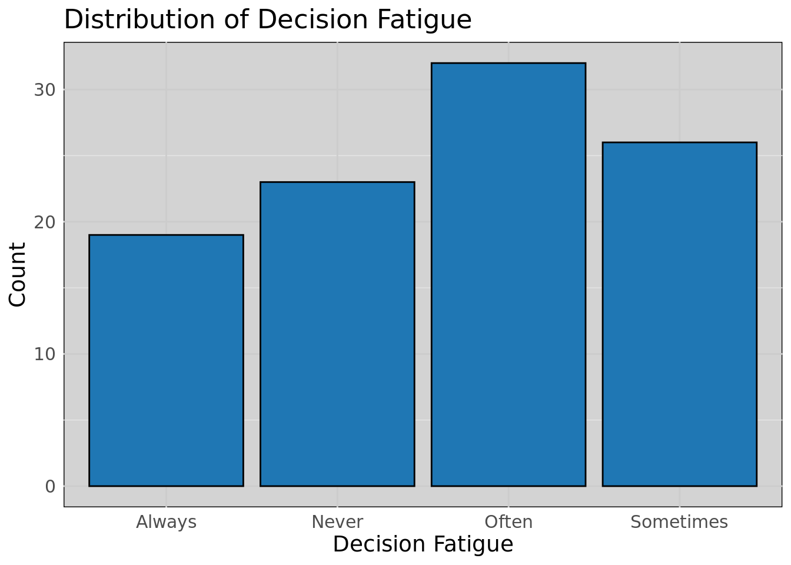
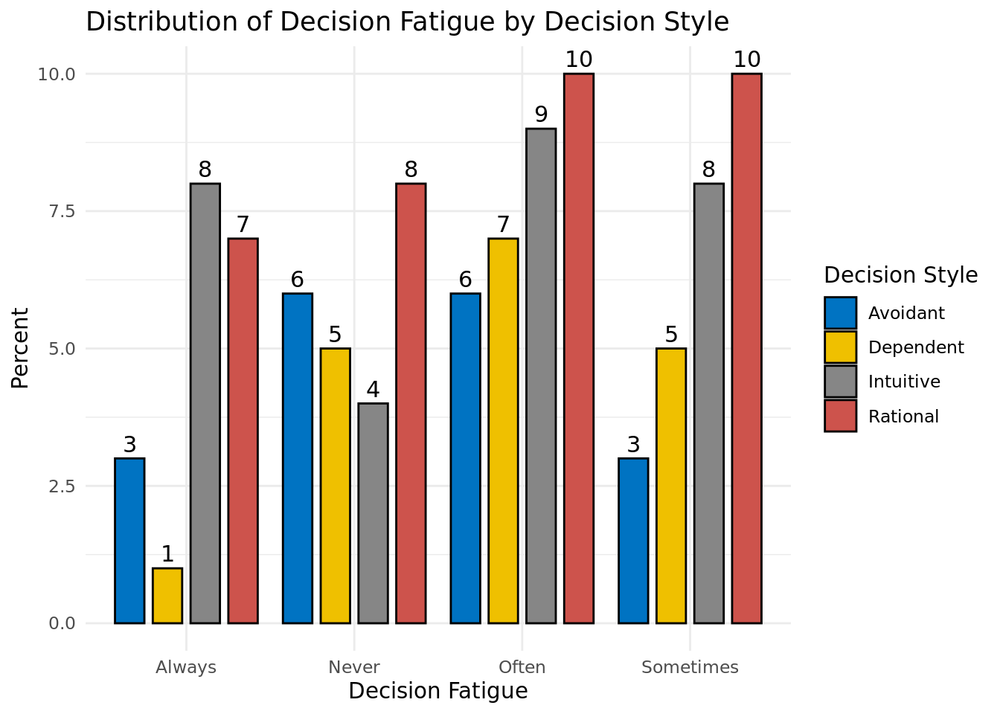

When making a decision, which factor influences you the most?
decision_fatigue
How often do you experience decision fatigue?
overanalysis
Do you tend to overanalyze decisions before making them?
decision_style
Which type of decision-making style best describes you?
cognitive_bias
Have you ever experienced cognitive bias affecting your decisions?
decision_strategies
What strategies do you use to improve your decision-making process?
decision_confidence
On a scale from 1-5, how confident are you in your decision-making skills?
Data Overview
The survey dataset contains responses to questions on demographic and behavioral characteristics. Here is a preview of the first few rows:
Code
data |>head() |>kable(caption ="Survey Data Preview") |>kable_styling(bootstrap_options =c("striped", "hover"), full_width =FALSE)
Survey Data Preview
age
gender
education
decision_factor
decision_fatigue
overanalysis
decision_style
cognitive_bias
decision_strategies
decision_confidence
35
Female
Undergraduate degree
Emotions and intuition
Often
Sometimes
Rational
No
Analyzing pros and cons
3
30
Female
Undergraduate degree
Social influences
Always
Sometimes
Rational
Unsure
Relying on past experiences
2
45
Female
Graduate degree
Social influences
Always
Yes
Intuitive
Yes
Analyzing pros and cons
5
19
Female
Graduate degree
Emotions and intuition
Often
Yes
Intuitive
Yes
Taking time
3
19
Male
Other
Past experiences
Always
Sometimes
Avoidant
Yes
Taking time
4
24
Female
High school or below
Logical reasoning
Sometimes
No
Rational
Yes
Analyzing pros and cons
2
Decision Fatigue Distribution
Code
ggplot(data, aes(x = decision_fatigue)) +geom_bar(fill ="#1f77b4", color ="black") +# Steel blue fill with black borderlabs(title ="Distribution of Decision Fatigue", x ="Decision Fatigue", y ="Count") +theme_minimal() +theme(panel.background =element_rect(fill ="#d3d3d3"), # Light gray backgroundpanel.grid.major =element_line(color ="gray80"), # Light grid linespanel.grid.minor =element_line(color ="gray90"),text =element_text(size =14) # Adjust text size )

Code
data_summary <- data %>%group_by(decision_fatigue, decision_style) %>%summarise(count =n(), .groups ="drop") %>%mutate(percent = (count /sum(count)) *100)# Generate the grouped bar plotggbarplot( data_summary,x ="decision_fatigue",y ="percent",fill ="decision_style",palette ="jco", # Color palette similar to referencelabel =TRUE, # Show values on barsposition =position_dodge(0.9),xlab ="Decision Fatigue",ylab ="Percent",title ="Distribution of Decision Fatigue by Decision Style",legend.title ="Decision Style") +theme_minimal()

1. Age vs Decision Confidence by Education Level
Code
data =FileAttachment('decision_data.csv').csv({ typed:true })viewof education_filter = Inputs.select( ["High school or below","Undergraduate degree","Graduate degree","Other"], { value:"Undergraduate degree",label:"Select Education Level:" })filtered_data = data.filter(d => d.education=== education_filter)Plot.dot(filtered_data, {x:"age",y:"decision_confidence",stroke: d => {if (d.education==="High school or below") return"steelblue";if (d.education==="Undergraduate degree") return"darkred";if (d.education==="Graduate degree") return"gold";return"purple"; },fill: d => {if (d.education==="High school or below") return"steelblue";if (d.education==="Undergraduate degree") return"darkred";if (d.education==="Graduate degree") return"gold";return"purple"; },r:4,// Slightly bigger for easier hovertitle: d =>`Age: ${d.age}\nConfidence: ${d.decision_confidence}\nEducation: ${d.education}`// Hover Tooltip}).plot({style: {"font-size":"14px",// General font size"axis-label-font-size":"16px",// Axis label size"axis-tick-font-size":"14px"// Axis tick size }})
Explanation:
This scatter plot explores how age relates to decision confidence across various education levels. Users can filter the graph to observe differences in trends based on education. For instance, older individuals with higher education levels may report greater decision confidence.
2. Age Distribution by Education Level
Code
viewof education_filter_age = Inputs.select( ["High school or below","Undergraduate degree","Graduate degree","Other"], { value:"Undergraduate degree",label:"Select Education Level:" })filtered_age = data.filter(d => d.education=== education_filter_age)Plot.rectY( filtered_age, Plot.binX( { y:"count",title: (d, i) =>`Age Range: ${i.x0} - ${i.x1}\nCount: ${i.length}\nEducation: ${education_filter_age}` },// Hover Tooltip { x:"age",thresholds:10,fill: d => {if (d.education==="High school or below") return"steelblue";if (d.education==="Undergraduate degree") return"darkred";if (d.education==="Graduate degree") return"gold";return"purple"; }} )).plot({style: {"font-size":"14px",// General font size"axis-label-font-size":"16px",// Axis label size"axis-tick-font-size":"14px"// Axis tick size }})
Explanation:
This histogram shows the distribution of age for different education levels. Users can select a specific education level to examine its age profile. This helps identify whether older or younger individuals are more common within each education bracket.
This interactive bar chart allows users to filter the data based on gender and explore the distribution of decision-making styles for each gender. It provides insights into how different genders approach decision-making.
4. Education vs Overanalysis
Code
viewof education_filter_overanalysis = Inputs.select( ["High school or below","Undergraduate degree","Graduate degree","Other"], { value:"Undergraduate degree",label:"Select Education Level:" })// Apply the new filter variablefiltered_education_data = data.filter(d => d.education=== education_filter_overanalysis)// Create the interactive bar chart with tooltipsPlot.barY( filtered_education_data, Plot.groupX( { y:"count",title: (d) =>`Overanalysis: ${d.overanalysis}\nCount: ${d.length}\nEducation: ${education_filter_overanalysis}`// Hover Tooltip }, { x:"overanalysis",fill:"overanalysis" } )).plot({style: {"font-size":"14px",// Font size for general text"axis-label-font-size":"16px",// Font size for axis labels"axis-tick-font-size":"14px"// Font size for axis ticks }})
Explanation:
This interactive bar chart shows how individuals with different education levels respond when asked about their tendency to overanalyze decisions. It helps identify whether people with higher education levels tend to overanalyze more.
5. Cognitive Bias by Age
Code
viewof cognitive_bias_filter = Inputs.select( ["Yes","No","Unsure"], { value:"Yes",label:"Select Cognitive Bias Status:" })// ✅ Use a unique name for filtered datafiltered_cognitive_bias_data = data.filter(d => d.cognitive_bias=== cognitive_bias_filter)Plot.plot({marks: [ Plot.dot(filtered_cognitive_bias_data, {x:"age",y:"decision_confidence",r: d => d.decision_confidence*2,// Bubble size reflects confidencefill: d => {if (d.cognitive_bias==="Yes") return"steelblue";if (d.cognitive_bias==="No") return"darkred";return"gold";// For "Unsure" },stroke:"black",// Bubble bordertitle: d =>`Age: ${d.age}\nConfidence: ${d.decision_confidence}` }) ],x: { label:"Age" },y: { label:"Decision Confidence" },width:600,height:400,style: {"font-size":"14px","axis-label-font-size":"16px","axis-tick-font-size":"14px" }})
Explanation:
This interactive bubble plot showcases the relationship between age and decision confidence, filtered by cognitive bias status. The size of each bubble reflects the level of confidence for each individual. This representation highlights trends in confidence levels across different ages while providing an intuitive visual cue through bubble sizes.